사출(프레스)금형설계기사 (2014-05-25 기출문제)
1과목: 금형설계
1. 앵귤러핀에 의하여 언더컷을 처리할 때, 슬라이드 코어의 운동량(M)을 구하는 관계식은?
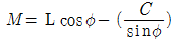
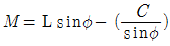
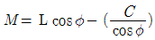
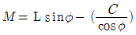
(정답률: 66%)

2. 다음 중 팬 게이트(fan gate)에 대한 설명으로 틀린 것은?
- 캐비티로 향해 있으며 부채꼴로 펼쳐진 게이트이다.
- 큰 평판 형상에 균일하게 충전하는데 적합한 게이트이다.
- 게이트 부근의 결함을 최소로 하는 데에 가장 효과가 있는 게이트 이다.
- 성형품을 밀어낼 때 자동으로 게이트가 절단된다.
(정답률: 94%)
3. 성형품의 이젝터 기구에서 스트리퍼 플레이트 방식에 대한 설명으로 올바른 것은?
- 국부적으로 큰 밀어내기 힘을 필요로 할 경우에 유리하다.
- 밀어낼 때 측벽에 큰 저항이 있는 상자 모양이나 원통 모양의 성형품에는 사용하지 않는다.
- 살 두께가 얇고, 외관상 이젝터 자국이 거의 남지 않으므로 투명 성형품에 적합하다.
- 성형품에 균열, 백화, 변형이 생기기 쉽다.
(정답률: 75%)
4. 이젝터 핀 설계 시 고려할 사항이 아닌 것은?
- 성형품의 이형저항 밸런스가 유지되도록 한다.
- 게이트의 하부 및 게이트와 직선 방향의 밑 부분에 설치하지 않는다.
- 공기 및 가스가 모이는 곳에 설치하여 에어벤트 대용으로 사용한다.
- 핀의 끝과 성형품은 될 수 있는 데로 적게 접촉하도록 한다.
(정답률: 75%)
5. 성형 수축률이 1보다 매우 작기 때문에 금형 치수 설계 시 근사식으로 많이 사용되고 있는 식은?(단, m : 상온에서의 성형품치수, S : 성형수축률, M : 상온에서의 금형치수이다.)
- M ≒ m(1 - S)
- M ≒ m(1 + S)
- m ≒ M(1 + S)
- m ≒ M(1 - S)
(정답률: 80%)
6. 성형기 형체력이 70ton, 금형내 유효 사출압은 460kgf/cm2로 성형하고자 할 때 성형품 투영면적은 약 몇 cm2 까지 가능한가?
- 70
- 152
- 322
- 460
(정답률: 74%)
7. 성형품의 구멍부 및 조립시의 끼워 맞춤부 등을 보강하기 위해 이용하는 방법은?
- 모서리에 덧살을 붙인다.
- 리브를 설치한다.
- 보스를 설치한다.
- 평면에 요철을 만든다.
(정답률: 84%)
8. 사출성형기의 노즐 중심과 금형의 스프루 중심을 일치시켜 주는 금형 부품은?
- 가이드 부시
- 로케이트 링
- 고정측 형판
- 사이드 블록
(정답률: 97%)
9. 사출성형 시 웰드 라인의 발생 원인으로 틀린 것은?
- 유동 불량에 의한 경우
- 사출압력이 높을 경우
- 수분 또는 휘발분 함유에 의한 경우
- 이형제의 사용이 너무 많은 경우
(정답률: 80%)
10. 러너리스 성형의 장점이 아닌 것은?
- 자동화 성형이 가능하다.
- 스프루나 러너의 재처리 비용이 절감된다.
- 사출용량이 적은 성형기로 성형이 가능하다.
- 소량생산에 많은 효과를 기대할 수 있다.
(정답률: 92%)
11. 기계식 프레스와 비교해 유압식 프레스의 장점이 아닌 것은?
- 스트로크가 길다.
- 가공속도가 빠르다.
- 스트로크를 다소 쉽게 조정할 수가 있다.
- 가압력의 조절을 용이하게 할 수 있다.
(정답률: 71%)
12. 다음 중 블랭킹 작업시 전단력을 작게 하려고 할 때 가장 효과적인 방법은?
- 펀치와 다이의 틈새(clearance)를 작게 한다.
- 프레스의 가공속도를 빨리 한다.
- 펀치와 다이의 모서리를 날카롭게 한다.
- 다이에 전단각(shear angle)을 준다.
(정답률: 94%)
13. 드로잉률 0.6, 재드로잉률 0.7 을 기준으로 하여 직경 200mm 의 블랭크 소재를 직경 60㎜ 의 원통용기로 성형코자 한다. 몇 회의 공정으로 성형이 되는가?
- 3
- 4
- 5
- 6
(정답률: 91%)
14. 한번의 블랭킹 공정에서 100% 정도의 전단면을 얻을 수 있는 방법은?
- 노칭
- 블랭킹
- 파인블랭킹
- 피어싱
(정답률: 90%)
15. 프로그레시브 전단 금형에서 제품의 윗면에 버(burr)가 발생하는 경우 다음 어느 공정의 부품을 수정해야 하는가?
- 펀칭
- 블랭킹
- 슬로팅
- 노칭
(정답률: 68%)
16. 두께가 3㎜인 스테인리스 강판에서 전개길이 300㎜로 이루어진 제품을 블랭킹 하는데 필요한 힘은 몇 ton 인가? (단, 전단강도는 50kgf/mm2 이다.)
- 42
- 43
- 44
- 45
(정답률: 82%)
17. 다음의 프레스 가공공정 중 압축가공 공정이 아닌 것은?
- 버링(burring)
- 코이닝(coining)
- 사이징(sizing)
- 스웨징(swaging)
(정답률: 74%)
18. 가죽, 고무, 종이 등의 블랭킹에 사용되는 금형은?
- 상하 블랭킹 금형
- 세이빙 금형
- 딩킹 금형
- 마무리 블랭킹 금형
(정답률: 66%)
19. 직경 12㎜ 의 피어싱 펀치로 두께 2㎜ 소재를 가공하고자 할 때 파일럿 핀의 직경은 약 몇 ㎜ 인가?
- 10.92
- 11.92
- 12.92
- 13.92
(정답률: 75%)
20. 프레스 금형의 펀치와 다이 날 맞춤 방법에 해당되지 않는 것은?
- 시그네스 테이프를 이용하는 방법
- 광선을 이용하는 방법
- 끼워 맞추기를 쓰는 방법
- 리프터핀을 사용하는 방법
(정답률: 71%)
2과목: 기계제작법
21. 구성인선을 방지대책으로 부적당한 것은?
- 절삭속도를 작게 할 것
- 절삭깊이를 적게 할 것
- 경사각을 크게 할 것
- 절삭공구의 인선을 예리하게 할 것
(정답률: 66%)
22. 다음 중 절삭 공구수명을 판정하는 방법이 아닌 것은?
- 절삭 가공한 직후에 가공표면에 광택이 나는 색조 또는 반점이 생길 때
- 절삭저항의 주분력에 변화가 나타나고, 배분력 또는 이송분력이 급격히 떨어질 때
- 공구인선의 마모가 일정량에 달하였을 때
- 완성 가공된치수의 변화가 일정량에 달하였을 때
(정답률: 62%)
23. 다음 중 금형 제작을 할 때 먼저 고려해야 할 사항과 관련이 먼 것은?
- 가격
- 납기
- 설비능력
- 공구수명
(정답률: 84%)
24. NC 프로그래밍의 보조기능 중 공구 교환시 사용하는 코드는?
- M00
- M02
- M⑤
- M06
(정답률: 71%)
25. 절삭온도에 관한 설명으로 틀린 것은?(오류 신고가 접수된 문제입니다. 반드시 정답과 해설을 확인하시기 바랍니다.)
- 절삭 작업할 때 발생된 열의 일부는 칩에 의하여 제거되고 일부는 전달된다.
- 절삭 작업할 때 발생된 열의 일부는 가공물의 내부에 들어가서 일정한 양의 절삭부에 어떤 온도를 나타나게 한다.
- 절삭속도가 작으면 절삭온도가 낮다.
- 칩을 제거할 때 가지고 가는 열은 절삭속도의 증가와 더불어 크게 되나 어떤 한도를 지나면 작게된다.
(정답률: 59%)
26. 다음 중 압출(extruding)가공법이 아닌 것은?
- 전방압출법
- 후방압출법
- 복합압출법
- 전주압출법
(정답률: 87%)
27. 사출금형의 가동측과 고정측 간의 안내와 금형 보호역할을 목적으로 사용되는 부품은?
- 가이드 핀
- 리턴 핀
- 로케이트 링
- 스프루 부시
(정답률: 97%)
28. 드릴의 절삭속도(m/min)를 나타내는 식은?
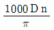
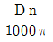
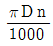
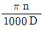
(정답률: 94%)
29. 유동형 칩이 발생하는 일반적인 조건이 아닌 것은?
- 연성의 재료(연강, 구리, 알루미늄 등)를 가공할 때
- 경사각이 클 때
- 절삭속도가 빠를 때
- 절삭깊이가 깊을 때
(정답률: 85%)
30. 와이어 컷 방전가공에서 세컨드 컷 가공의 용도로 적당하지 않은 것은?
- 가공면 연화층의 보강
- 다이 형상에서의 돌기 제거
- 내부 응력에 의한 변형의 수정
- 코너부 형상 에러 및 가공면의 직진정도 수정
(정답률: 78%)
31. CNC프로그램의 중기능에서 연속 유효 G코드(modal G code)에 대한 설명으로 옳은 것은?
- 지정된 블록에서만 유효한 기능이다.
- 동일 그룹의 다른 G코드가 지령될 때까지 유효한 기능이다.
- 기계의 각종 기능을 수행하는 보조기능이다.
- 반복하는 사이클 기능이다.
(정답률: 84%)
32. 다음 특수 가공법 중 재료의 피로 한도를 증가시키는 가공법이 아닌 것은??
- 숏 피닝(shot peening)
- 배럴 다듬질(Barrel finishing)
- 액체 호닝(Liquid honing)
- 그릿 블라스팅(Grit blasting)
(정답률: 40%)
33. 방전가공의 특징에 대한 설명으로 틀린 것은?
- 재질이나 경도와 관계없이 가공할 수 있다.
- 공구를 회전시킬 필요가 없으므로 4각공이나 복잡한 윤곽의 구멍가공이 가능하다.
- 절삭공구의 절삭력에 견딜만한 강성이 부족한 얇은 부품의 가공에 유용하다.
- 초음파 가공보다는 가공 속도가 떨어지나 전해 연삭보다는 가공속도가 빠르다.
(정답률: 58%)
34. 타발 가공된 면을 재가공하여 절단면을 깨끗하게 하는 가공법은?
- 셰이빙(Shaving)
- 트리밍(Trimming)
- 블랭킹(Blanking)
- 슬리팅(slitting)
(정답률: 84%)
35. 끝단의 테이퍼 구멍에 공구를 끼워 가공물의지지, 드릴가공, 리머가공, 센터드릴가공을 주로 하는 선반의 구성 부분은?
- 베드
- 주축대
- 왕복대
- 심압대
(정답률: 82%)
36. 직육면체의 물체 밑면에 3개, 측면에 2개, 1개씩의 위치 결정구를 설치할 때 위치 결정법은?
- 4 - 2 - 1 위치 결정법
- 1 - 2 - 3 위치 결정법
- 3 - 2 - 1 위치 결정법
- 1 - 2 - 3 위치 결정법
(정답률: 82%)
37. 고속가공을 금형가공에 이용할 때 장점으로 가장 거리가 먼 것은?
- 가공시간을 단축하여 생산성을 향상시킨다.
- 디버링이나 피니싱 시간을 감소시킨다.
- 열전달을 향상시켜 표면경도를 높일 수 있다.
- 작은 직경의 공구를 효율적으로 사용한다.
(정답률: 62%)
38. 리머 작업에서 평행 날의 경우 떨림(chatter)를 피하고 정확한 가공을 하기 위한 방법으로 가장 적절한 것은?
- 날의 수를 홀수로 한다.
- 날의 수를 짝수로 한다.
- 날의 수에 관계없이 그 간격을 일정하게 한다.
- 날의 수를 짝수로 하고 그 간격을 일정하게 한다.
(정답률: 63%)
39. 플러그 게이지(plug gauge)에 대한 설명으로 볼 수 없는 것은?
- 통과측과 정지측을 갖고 있다.
- 통과측은 원통의 길이가 정지측 보다 길다.
- 측정 눈금을 읽어 합∙부 판정을 한다.
- 열팽창계수가 적은 재료로 제작한다.
(정답률: 68%)
40. 수직밀링신에서 정면커터의 지름이 200㎜ 이고 날 수가 8개, 1개의 날 당 이송거리가 0.1mm 일 때 테이블의 이송속도는 몇 ㎜/min 인가? (단, 커터의 회전수는 500rpm으로 한다.)
- 50
- 160
- 400
- 80
(정답률: 49%)
3과목: 금속재료학
41. 주조용 알루미늄 합금의 열처리 기호 중 T6 는 무엇을 의미하는가?
- 담금질 후 인공시효경화 시킨 것
- 담금질 후 냉간가공하여 인공시효 한 것
- 담금질 후 냉간가공한 것
- 제조 후 담금질하지 않고 바로 인공시효 한 것
(정답률: 45%)
42. 포금(gun metal)dms 대포의 포신으로 사용되는 내식성이 좋은 금속을 말하는데 이것의 주성분은?
- Cu, Sn, Zn
- Cu, Zn, P
- Cu, Al, Sn
- Cu, Ni, Mn
(정답률: 60%)
43. 조선 압연판으로 쓰이는 것으로 편석과 불순물이 적은 균질의 강은?
- 세미킬드강
- 림드강
- 캡트강
- 킬드강
(정답률: 78%)
44. 지름 15㎜ 의 연강봉에 500kgf 의 인장하중이 작용할 때 생기는 응력은 약 몇 kgf/cm2 인가?
- 1.3
- 128
- 2.8
- 283
(정답률: 58%)
45. 공석변태에 대한 설명으로 틀린 것은?
- 페라이트(ferrite)와 시멘타이트(Fe3C)가 층상으로 교대로 존재하는 조직이다.
- 펄라이트(peralite)변태이다.
- A1 변태이다.
- A2 변태이다.
(정답률: 67%)
46. 페놀수지라고도 하며 석탄산, 크레졸 등과 포르말린을 반응시킨 것으로 도료, 접착제로 사용하며 석면 등을 혼합하여 전화기, 전기소켓, 스위치 등 전기기구로 사용되는 것은?
- 베클라이트
- 셀룰로이드
- 스티롤 수지
- 요소 수지
(정답률: 62%)
47. 결정성 수지는 비결정성 수지에 대하여 용융수지의 흐름방향의 수축이 직각방향의 수축에 비해 어떠한가?
- 변화가 없다.
- 크게 나타난다.
- 작게 나타난다.
- 예측할 수 없다.
(정답률: 85%)
48. 마텐자이트(martensite)를 400℃에서 뜨임(tempering)하면 어떻게 변하는가?
- 펄라이트가 된다.
- 트루스타이트가 된다.
- 솔바이트가 된다.
- 오스테나이트가 된다.
(정답률: 61%)
49. 다음 식으로 경도값을 구하는 경도계는?
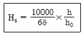
- 로크웰 경도계
- 비커즈 경도계
- 브리넬 경도계
- 쇼어 경도계
(정답률: 80%)
50. 노치부의 단면적 A(cm2)인 시편을 절단하는데 흡수된 에너지를 E(kgf-m)라 할 때 샤르피 충격값은 어떻게 표시되는가?
- E/A
- E∙A
- E
- A/E
(정답률: 87%)
51. 강의 물리적 성질을 설명한 것 중 옳은 것은?
- 비중은 탄소량의 증가에 따라 증가한다.
- 비열은 탄소량의 증가에 따라 감소한다.
- 열전도도는 탄소량의 증가에 따라 증가한다.
- 열팽창계수는 탄소량의 증가에 따라 감소한다.
(정답률: 61%)
52. 조미니 선단시험(Jominy end test)은 어떤 시험에 사용하는가?
- 경화능시험
- 충격시험
- 부식시험
- 마모시험
(정답률: 68%)
53. 전율고용체형 상태도에서 70A - 30B합금을 냉각할 때 온도 To 에서 고체 S 의 양은 몇 % 인가?
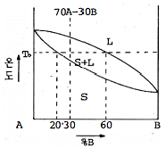
- 25
- 30
- 70
- 75
(정답률: 64%)
54. 칠드 주철의 표면 조직은?
- 시멘타이트(cementite)
- 페라이트(ferrite)
- 오스테나이트(austenite)
- 펄라이트(peralite)
(정답률: 62%)
55. 베이나이트 조직을 얻기 위한 항온 열처리 조작은?
- 오스포밍
- 마아퀜칭
- 오스템퍼링
- 담금질
(정답률: 74%)
56. 강의 열처리 방법 중 표면경화법에 속하는 것은?
- 담금질
- 노말라이징
- 마템퍼
- 침탄법
(정답률: 87%)
57. 표점거리가 100㎜, 시험편의 평행부 지름 14㎜ 인 시험편을 최대하중 6400kgf 로 인장 한 후 표점거리가 120㎜ 로 변화되었다면 인장강도는 약 몇 kgf/mm2 인가?
- 5.16
- 31.5
- 41.6
- 61.4
(정답률: 68%)
58. 순철의 자기변태와 동소변태를 설명한 것 중 틀린 것은?
- 동소변태란 결정격자가 외적 조건에 의하여 변하는 변태를 말한다.
- 자기변태도 결정격자가 변하는 변태이다.
- 동소변태점은 A3점과 A4 점이 있다.
- 자기변태점은 약 768℃ 정도이며 일면 큐리(curie)점이라 한다.
(정답률: 63%)
59. 다음 중 연강의 용도로 가장 부적합한 것은?
- 형강
- 리벳
- 레일
- 철골
(정답률: 69%)
60. 다음 중 우수한 전기 특성과 치수 안정성, 높은 강도와 낮은 습수성을 가지고 있는 열경화성 수지는?
- AS 수지
- 불소 수지
- 메타크릴 수지
- 에폭시 수지
(정답률: 71%)
4과목: 정밀계측
61. 바깥지름, 길이, 두께 등을 검사하기 위한 평행, 평면의 내측면을 가지는 한계 게이지는?
- 봉 게이지
- 스냅 게이지
- 판형 게이지
- 테보 게이지
(정답률: 73%)
62. 측정데이터 0.035의 유효숫자의 자리수는?
- 2
- 3
- 4
- 35
(정답률: 61%)
63. N.P.L식 각도 게이지에 대한 설명 중 올바른 것은?
- 홀더가 필요 없다.
- 보통 49개가 한 세트로 되어 있다.
- 각도측정부에 직접대고 틈새에 의해 각도를 판단한다.
- 정도는 ±12″, 조합했을 경우는 ±24″정도이다.
(정답률: 62%)
64. 표면거칠기에서 평가된 단면곡선의 제곱평군편차는? (단, KS B ISO 4287 에 따른다.)
- Pa, Ra, Wa
- Pz, Rz, Wz
- Pq, Rq, Wq
- Pc, Rc, Wc
(정답률: 67%)
65. 전기마이크로미터에서 변위를 전기량으로 바꾸는 방식에 해당하지 않는 것은?
- 인덕턴스(inductance) 식
- 커패시턴스(capacitance) 식
- 컨덕터(conductor) 식
- 스트레인 게이지(strain gauge) 식
(정답률: 59%)
66. 표준온도 20℃에서 길이 1000㎜인 강제(steel) 롱 게이지 블록이 22℃에서는 약 몇 ㎜ 늘어나는가? (단, 강의 열팽창계수는 11.5 x 10-6/℃ 이다.)
- 0.012
- 0.023
- 0.031
- 0.038
(정답률: 74%)
67. 원형 부분은 기하학적 원으로부터의 차이의 크기를 측정하는 진원도는 크게 3가지 종류로 규정하고 있는데 그 종류에 포함되지 않는 것은?
- 반지름법에 의한 진원도
- 3점법에 의한 진원도
- 타원법에 의한 진원도
- 지름법에 의한 진원도
(정답률: 84%)
68. H형 및 X형 단면의 표준자와 같이 중립면에 눈금을 만든 눈금자를 지지할 때 사용되는 방법인 베셀점을 구하는 식으로 옳은 것은? (단, L은 표준자 전체 길이이고 a는 양 끝단에서 지지점 사이의 거리이다.
- a = 0.2113L
- a = 0.2203L
- a = 0.2232L
- a = 0.2386L
(정답률: 74%)
69. 구멍 치수가
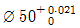
, 축의 치수가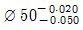
인 끼워맞춤에서 최소틈새는 얼마인가?- 0.020
- 0.041
- 0.⑤0
- 0.071
(정답률: 74%)
70. 래핑가공, 초정밀 가공 등 대단히 좋은 다듬질면 즉, 0.8㎛ 이하의 거칠기 측정에 적당한 측정방법은?
- 광 절단법
- 경사 절단법
- 광학적 반사법
- 광파 간섭법
(정답률: 66%)
71. 진직도를 측정하는 방법이 아닌 것은?
- 수준기에 의한 방법
- 나이프 에지에 의한 방법
- 스냅 게이지에 의한 방법
- 오토콜리메이터에 의한 방법
(정답률: 71%)
72. 미터 나사를 삼침법으로 측정하고자 한다. 최적선지름으로 선정된 지름 3.000㎜의 삼침을 사용하여 측정하였더니 외측거리가 50.000㎜이라고 할 때 나사의 유효지름은 약 몇 ㎜ 인가?
- 44.785
- 44.950
- 45.200
- 45.500
(정답률: 60%)
73. 축용 한계게이지가 아닌 것은?
- 양구형 스냅게이지
- 링 게이지
- C형 스냅게이지
- 플러그 게이지
(정답률: 57%)
74. 지름 20㎜, 길이 1m의 연강봉의 길이를 측정할 때 0.6㎛의 압축이 있었다고 할 경우, 측정력은 몇 N 인가?(단, 봉의 굽힘은 없으며, 세로탄성계수는 210GPa 이다.)(오류 신고가 접수된 문제입니다. 반드시 정답과 해설을 확인하시기 바랍니다.)
- 2⑤.6
- 134.6
- 39.6
- 5.6
(정답률: 59%)
75. 버니어 캘리퍼스로 지름 20㎜, 길이 80㎜의 환봉을 측정하는데 그림과 같이 θ=1° 의 기울기가 발생하였을 경우, 나타나는 측정 오차는 약 몇 ㎜ 인가?
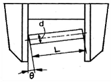
- 0.169
- 0.337
- 0.468
- 0.696
(정답률: 53%)
76. 정반 위에 있는 경사면의 각도를 호칭길이 100㎜의 사인바로서 측정하였다. 사인바 양단에 사용한 게이지블록의 높이가 각각 28.940mm와 10.000㎜ 였다면 경사면의 각도는 약 얼마인가?
- 8°25'
- 9°25'
- 10°55'
- 11°55'
(정답률: 67%)
77. 다음 중 측정량의 변화에 대하여 지침의 흔들림의 크기를 말하는 용어는?
- 교정
- 감도
- 조정
- 보정
(정답률: 79%)
78. 공작 기계 A, B로 가공한 부품의 지름을 측정한 결과 측정치의 분포가 그림과 같을 때 정도(精度)에 대한 설명으로 올바른 것은?
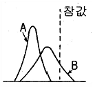
- B는 정밀도는 좋고 정확도는 나쁘다.
- A는 정밀도는 좋고 정확도가 나쁘다.
- A는 B보다 정확도와 정밀도가 모두 좋다.
- A는 B보다 정확도와 정밀도가 모두 나쁘다.
(정답률: 76%)
79. 3차원 측정기의 정도 평가시 X(Y) 축의 롤링(rolling)검사에 사용되는 측정기로 가장 적합한 것은?
- 단색 광원장치
- 공기 마이크로미터
- 전기 수준기
- 진원도 측정기
(정답률: 60%)
80. 다음 중 측정기의 감도 표시방법으로 옳은 것은?
- 지시량의 변화/측정량의 변화
- 최소눈금의 2배
- 최소눈금의 3배
- 최소눈금 / 눈금선 간격
(정답률: 64%)
M = mv
여기서 m은 슬라이드 코어의 질량이고, v는 앵귤러핀에 의해 발생하는 속도이다. 따라서, 앵귤러핀에 의해 발생하는 속도가 클수록 슬라이드 코어의 운동량도 커진다.
정답은 "" 이다. 이유는 이 식이 슬라이드 코어의 운동량을 나타내는 관계식이기 때문이다.